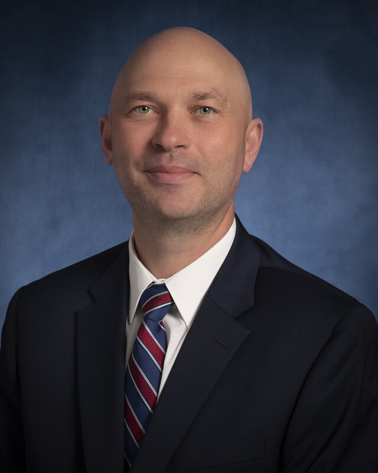
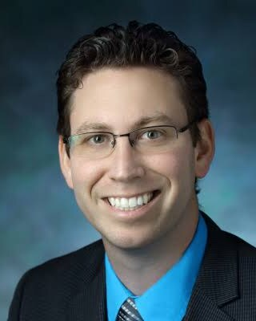

People
The Center is led jointly by a gastroenterologist and a biomedical engineer, reflecting its premise that clinical medicine and engineering contribute to the same projects.

Director
Professor of Medicine · Director, IBD Center
Gastroenterologist specializing in inflammatory bowel disease. His laboratory studies the fibrotic complications of IBD, with work in antifibrotic medicinal chemistry, local and sustained-release delivery, and large-animal models of intestinal stricture.

Associate Director for Drug Delivery
Biomedical Engineering
Biomedical engineer whose laboratory develops nanoparticle and biomaterial platforms for drug delivery and cell engineering, including biodegradable polymer systems for local, sustained release.
Medicinal chemistry, cell biology and in vivo pharmacology.
Instructor
In vivo model development and cell-directed antifibrotic programs; co-investigator on the theragripper R01 awards.
Research Associate
Medicinal chemistry: analog design, synthesis, structure–activity relationships and analytical characterization.
Postdoctoral Fellow
Formulation and sustained-release delivery; the chemistry and chemical engineering laboratory.
Research Technician
Cell culture, patient-derived fibroblast lines and the assays that support the therapeutic programs.
Research Staff
Cell biology and antifibrotic assays.
High-school, undergraduate and visiting students who have trained in the laboratory.
High school student
Rotating student
High school student
Rotating student
Undergraduate
University of Maryland
The Center's programs are conducted with faculty in biomedical engineering, chemical and biomolecular engineering, pharmacology, pharmaceutical sciences, surgery, radiology and pathology, who are credited on the programs to which they contributed. Projects remain with their investigators.